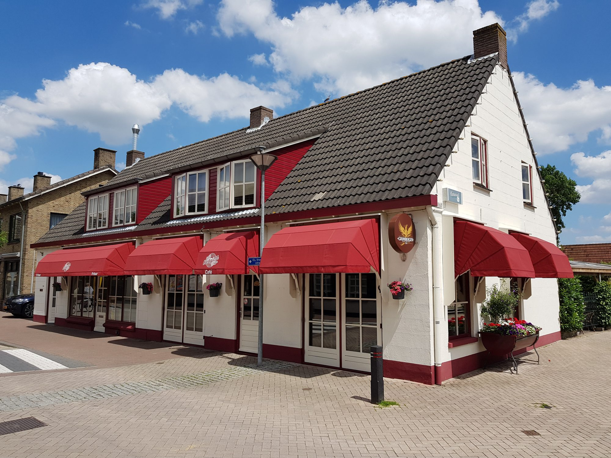
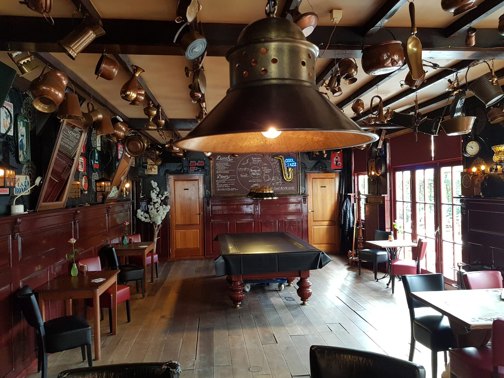
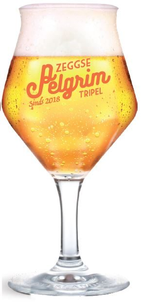
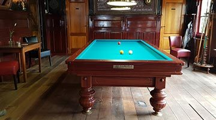
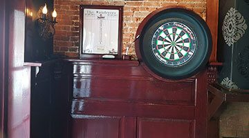
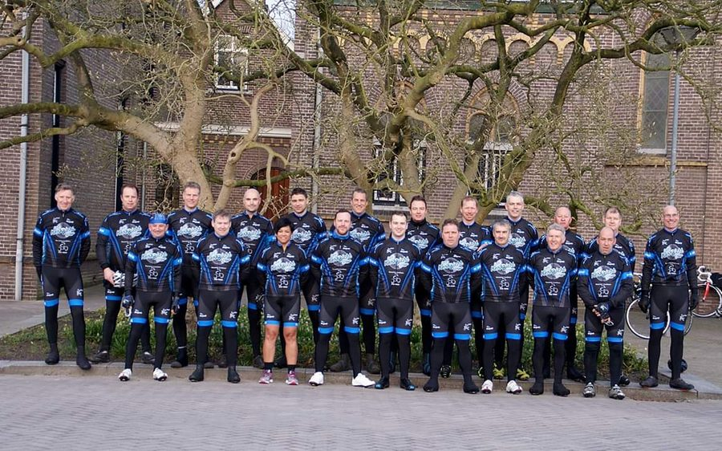
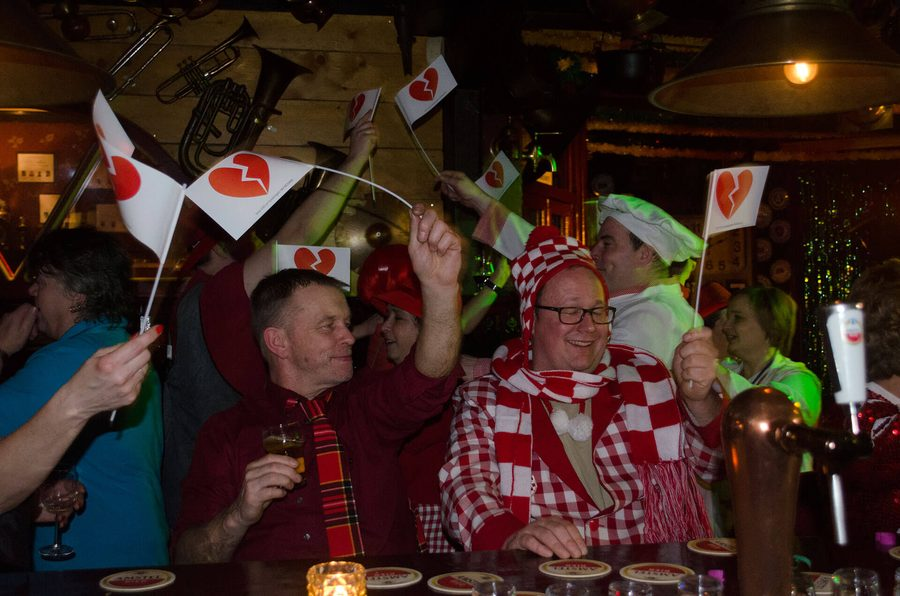
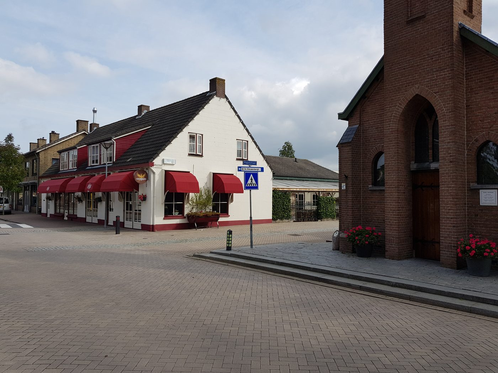

De thuishaven van Zegge
Café, zaal en eetcafé recht tegenover de kerk. Voor een biertje aan de bar, een hapje uit de keuken of een avond biljarten en darten.

Eetcafé
Voor de lunch of het diner schuift u gewoon aan in het café. Alle hoofdgerechten komen met groentjes en friet.
Frituur: woensdag tot en met zondag van 16:00 tot 20:00, op vrijdag al vanaf 12:00.

Zeggse Pelgrim Tripel
Het bier van Zegge, sinds 2018. Elke maand zetten we een ander bier in de spotlight.
Thuishaven van vele verenigingen
Bij Kerkzicht wordt gebiljart, gedart, gedanst en gerepeteerd. En samen met verenigingen uit de Zeg zetten we elk jaar weer feesten en evenementen neer.

Biljarten
Biljartvereniging Kerkzicht speelt met diverse teams in de competitie van de Roosendaalse biljartbond.

Darten
Dartvereniging de Wanderers gooit hun pijlen in de voorkant van het café.

Tourclub
Ook Tourclub TC Zegge hoort bij de vaste verenigingen van Kerkzicht.

Feesten
Van het Hartenbal tot carnaval, samen met de verenigingen uit de Zeg.
Ook bij Kerkzicht
- Line-dance, maandagavond
- Harmonie St Cecilia, donderdagavond
- Beachvolleybal
- Fietsvierdaagse
- Carnaval
- Kerstmarkt
Zin om mee te doen met een van deze verenigingen? Bel ons of loop even binnen, dan verwijzen we u graag door.

Over Kerkzicht
De naam Kerkzicht is niet toevallig.
Het café staat recht tegenover de kerk van Zegge. In de meimaand vinden veel pelgrims na een bezoek aan de Kapel de weg naar ons, voor koffie met worstenbrood of vlaai.
De rest van het jaar is Kerkzicht het café van het dorp: voor de vaste gasten aan de bar, de verenigingen in de zaal en iedereen die een hapje komt eten.
Openingstijden en contact
U vindt ons aan de Onze Lieve Vrouwestraat in Zegge. Vragen? Bel ons gerust.
Café-Zaal Kerkzicht
Even bellen of mailen kan altijd.